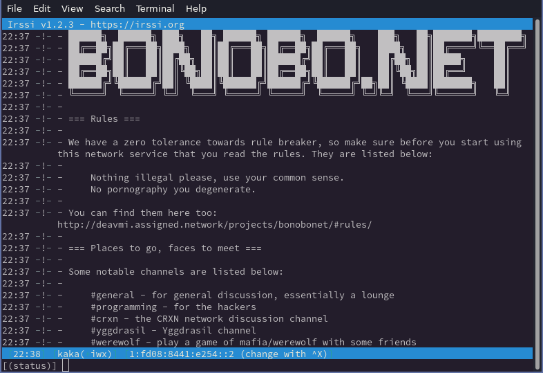

BonoboNET
The community run IRC network for hackers
What is BonoboNET?
BonoboNET is an IRC or Internet Relay Chat network that lets people and communities get together and chat in groups (channels) or in one-to-one conversations (private messages). The topics for discussion range from programming, to politics, networking and memes. All are welcome to join as long as they follow the Rules. The network is maintained by the community, especially these People.
We have servers running all around the world and connecting is as easy as pointing your favorite IRC client to one of them listed on the Servers page.
We offer Atheme-based services such as:
ChanServ- This lets you register and manage channels
NickServ- This lets you register and manage your user account
HostServ- This lets you change your hostmask associated with your logins
Want to join us?
Come and login and then head on over to #bnet or #general and we can get you started with any further questions or just chit-chat.
Want to find some more rooms? Type /list to get a list of channels.
Join our IRC network!
Getting connected is very easy to do. Simply head on over to our Servers page to find a list of servers available which you can use to connect to our network!
Before you do so, please make sure you read the rules.
Private Web IRC
Although we have a public instance for general use, you can also request private access
by asking on #bnet. This will allow you to get access on webirc.bnet.eu.org.

Rules
- No doxxing.
- No spamming.
- No ban evasion.
- No unsolicited messages.
- No pornography, you degenerate.
- No bots are allowed on the network.
- Unless you have permission from an oper to do so
- No lies and rumors about others.
- No discussion about or related to drugs.
- No ethnic, religious, and LGBT-related slurs.
- No discussion about darknet markets or any black market.
Zero-tolerance policy towards breaking the rules.
Servers
Below is a list of servers you can use your IRC client to connect to in order to join the BonoboNET network.
Clearnet
List of clearnet-connected servers. Those marked with a (6) have only IPv6
connectivity; similarly those with (4) have only IPv4 connectivity.
Preferred Address: irc.bnet.eu.org (Recommended)
| Node | Address | Port |
|---|---|---|
| rany.bnet | rany.irc.bnet.eu.org (4) |
6667/6697 (TLS) |
| reddawn648.bnet | reddawn648.irc.bnet.eu.org (6) |
6667/6697 (TLS) |
| pinewood.bnet | pinewood.irc.bnet.eu.org (6) |
6667/6697 (TLS) |
Yggdrasil
List of servers available over the Yggdrasil network.
Preferred Address: y.irc.bnet.eu.org (Recommended)
| Node | Address | Port |
|---|---|---|
| rany.bnet | y.rany.irc.bnet.eu.org | 6667/6697 (TLS) |
| pinewood.bnet | y.pinewood.irc.bnet.eu.org | 6667/6697 (TLS) |
| reddawn648.bnet | y.reddawn648.irc.bnet.eu.org | 6667/6697 (TLS) |
| braveheart.bnet | y.braveheart.irc.bnet.eu.org | 6667/6697 (TLS) |
Mycelium
List of servers available over the Mycelium network.
| Node | Address | Port |
|---|---|---|
| pinewood.bnet | myc.pinewood.irc.bnet.eu.org | 6667/6697 (TLS) |
I2P
List of servers available over the I2P network.
| Node | Address | Type |
|---|---|---|
| rany.bnet | zet2po3a6pjlsbpgbvlintiwvnpjw6d4bdsem5kcckbqiroebq3q.b32.i2p:6667 | No SSL/TLS |
| pinewood.bnet | weskaap.i2p:6667 | No SSL/TLS |
Usage ↵
Botty
Botty is the official BonoboNET bot written by rany.
Commands
There are quite a few of commands and this section aims to describe them all.
Translation service
Botty has the ability to translate sentences you give it to any language of choice or to guess the language of the setenece provided and then to translate it to English.
The following translates the given sentence to English by guessing the origin language:
The reply:
The following let's you translate a given sentence to the requested language, here Arabic:
The reply:
Deavmi Comedy
If you wish to express the
a e t h e t i c sin your text then this command is for your:
The reply:
Rot 13
Rot 13 does a simple scrambling of the words. For more information see ROT13.
Here we rotate the text "THIS IS A SECRET... ROMAN SECURITY":
The reply:
Urban Dictionary lookup
Botty provides the ability to look up the meaning of words according to the world's true source of information, Urban Dictionary.
Here we use the command to lookup the definition of "penis":
The reply:
botty: rany, Definition:
botty:
botty: [the thing] that [justin bieber] [doesnt] have
botty:
botty: rany, Example:
botty:
botty: [haha] he [doesnt] have [a penis]
botty:
botty: rany, Author: helloim345
botty: rany, Permalink: http://penis.urbanup.com/5049121
If you want to get the second top definition then you can do something like this:
Text reversal
You can reverse text too:
The reply:
Searching the web
Botty provides the ability to search the web using DuckDuckGo and grabbing the first result. Here we search for the definition of "Little Endian":
The reply:
botty: deavmiYgg, <section class="prog__container"><p>From Swift: someone who eats eggs little end first. Also used of computers that store the least significant byte of a word at a lower byte address than the most significant byte. Often considered superior to big-endian machines. See also big-endian.</p></section>
Ping
You can ping hosts using Botty. It will only ping the host once which is akin to running ping <ip> -c 1.
The reply:
Integrations
Botty has a few integrations with respect to textual recognition.
Website recognition
Botty can recognize links in text and shows the website's title at said link.
The reply:
YouTube
If you have a YouTube video in the message you send then it will appear with the information:
The reply:
Ended: Usage
Blog
{{ blog_content }}
Network ↵
Joining the network
We welcome having more people join our IRC network by setting up new servers all around the world, connected over a diverse selection of networks.
Follow the steps below to get linked in:
Configuration ↵
Peering
BonoboNET is very open to peering with new servers.
Peering process
Below is a guide for peering your server onto BonoboNET.
Peering rules
Make sure you abide by the normal rules as put out in Rules and then the additional peering rules:
- You will NOT run any services on the network.
services.bnetis the dedicated services host operated byrany
- You will not link any servers to the network without running it through
ranyordeavmifirst - You will update your configuration when requested
- You will be on the
#opersand#bnetchannels always - You will use the following motd
Finding a peer
First, you need to find someone who is already running a BonoboNET node and available for peering.
You will then notify either rany or deavmi and provide details on who you are and who you want to link with. The person
you want to link with must follow this whole document as well as the others within this section.
Network requirements
We prefer links that run over clearnet IPv6-only - considering most nodes have access to such network connectivity it would make sense to get an IPv6 connection for yours if you wish to join.
Credentials
Contacting the admins
Before you are able to link in you will need to acquire some information from the
network administrators, you can contact one of the two network administrators
with a request to join BonoboNET and the server's name that you have chosen
(this must end with .bnet, so <myName>.bnet)
deavmi(deavmi@redxen.eu)rany(ranycrxn@riseup.net)
After contacting a network administrator you will be given two pieces of information,
one of which will be your sid (server identifier) and another will be a so-called
"remote include" which will be used later in your configuration file. You will also
be provided with a subdomain in *.irc.bnet.eu.org which will be for use with your
node.
Configuration
This will provide you the steps in configuring your unrealircd server to be able to link into the BonoboNET IRC network.
After building unrealircd you should have a sub-directory named conf/, you should
create a new blank file named unrealircd.conf within it. If a file with such name
already exists then you will need to delete it and create an empty one form scratch.
You are to add the following lines of code in the order that they appear in this tutorial.
Default modules
There should be some configuration files created for you by the build process, and they should be included by pasting the following into your config:
/* Load modules */
include "modules.default.conf";
include "modules.optional.conf";
include "snomasks.default.conf";
include "operclass.default.conf";
Cloaking module
A cloaking module needs to be loaded, I have decided to use the
cloak_md5 module, which can be loaded by placing this directive
in your config file:
Remote inclusion
This section used to be applicable but we no longer do remote inclusion anumore and prefer having the server administrators have their configuration files all based locally.
Server information
You will now personalize the settings of this server by setting the name of your
server to the one you chose in the e-mail. Along with this a custom short description
of your server, followed by the sid you were sent in the e-mail.
Following this we will want to add some contact information for your server which will allow a user of your server to find contact information for your server.
/* Administrator contact information */
admin
{
"<full name>";
"<screen name>";
"<email address>";
}
Classes
We need to define some classes which are effectively names used to refer to a bunch of settings pertaining to connection management in terms of queueing. We shall define these for:
clients- Affects ordinary clients
opers- Affects those logged in as oper
servers- Affects communication for server-to-server (S2S) links
These are defined in order below:
/* Client class */
class clients
{
pingfreq 90;
maxclients 1000;
sendq 200k;
recvq 8000;
};
/* Oper class */
class opers
{
pingfreq 90;
maxclients 50;
sendq 1M;
recvq 8000;
};
/* Server class */
class servers
{
pingfreq 60;
connfreq 30;
maxclients 100;
sendq 20M;
};
Operator information
Since this is your server you will be able to configure an operator account that
can only be used to gained privileged control over your server. You should set
the nickname for your operator user and put that in <username>. Also, set a strong
password that will be used for gaining access to operator status.
/*
* Operator information
*/
oper <username>
{
class opers;
mask *@*;
password "<operator password>";
operclass netadmin;
swhois "is a Network Administrator";
vhost administrator.bnet;
}
- It is important you keep the
vhostset asadministrator.bnet
Listening configuration
We now need to configure what ports your server will listen on.
Clients
For client connections we will let the server bind to all addresses
and listen on port 6667:
We will also have a socket listen on 6697 which has TLS enabled on
it such that users can connect ina secure manner if they so choose to:
Lastly we need to create an allow {} block. With listeners setup a socket
is bound which will accept connections at a network transport protocol level
however once connected we can decide whether to let someone proceed with
sending us IRC commands, allow blocks control this. We want to let any
user in from any IP (hence the *@*), we want it to apply rules from the
clients class defined earlier and only allow a maximum of a 100 connections
from the same IP:
Servers
The servers need to be able to link to each other and they do so over TLS, so add the following:
Services configuration
There are some restraints we need to include some configuration to allow
a certain server, namely services.bnet, to be able to have special rights
seeing as it provides IRC services to the whole network. We also add another
rules banning the use of nicknames that are used for services.
TODO: the above should be added into remote config?
Server parametrs
There are some parameters that are specific to your server which are required to be set, these are shown below:
k-line address
The k-line address is the e-mail address a user should use in order to get in contact with the admin of a server regarding a k-line they received on said server. This is set as follows:
- Set the
<admin email address>here to the same one you used in theadmin {}block earlier
Unchanging parameters
The following settings should be set as is. They control the modes a user will have set in certain scenarios, what modes a channel will have when created also which channel operators (such as you) should join to.
/* Modes and oper auto-join */
set
{
modes-on-connect "+ixw";
modes-on-oper "+xws";
modes-on-join "+nt";
oper-auto-join "#opers";
options
{
hide-ulines;
show-connect-info;
}
}
Spam protection
The following settings relate to controlling potential spam-like activity on your server.
set
{
/* Minimum connection time before valid use of `/QUIT` */
anti-spam-quit-message-time 10s;
/* Settings for spam filter */
spamfilter
{
ban-time 1d; /* default duration of a *LINE ban set by spamfilter */
ban-reason "Spam/Advertising"; /* default reason */
virus-help-channel "#help"; /* channel to use for 'viruschan' action */
/* except "#help"; channel to exempt from Spamfilter */
}
}
- The first option is
anti-spam-quit-message-time- This is to be set to the number of seconds that someone must be connected before using the
/quitcommand - If the user uses the command below the bound then it is considered spammy and they will be marked as spammy users
- We recommend the default of
10s(10 seconds)
- This is to be set to the number of seconds that someone must be connected before using the
- The
spamfilterblock includes some more in-depth parameters relating to spam- We normally don't change any of the settings here and leave them as is
Restrictions
One can configure the restriction of commands in a time-based manner using tje restrict-commands option as shown below.
set
{
restrict-commands
{
list
{
connect-delay 60;
exempt-identified yes;
exempt-reputation-score 24;
}
invite
{
connect-delay 120;
exempt-identified yes;
exempt-reputation-score 24;
}
}
}
We normally leave these settings as is.
Connection throttling
One can configure the throttling of connections with the connthrottle option as shown below.
set
{
connthrottle
{
known-users
{
minimum-reputation-score 24;
sasl-bypass yes;
}
disabled-when
{
reputation-gathering 1w;
start-delay 3m;
}
}
}
We normally leave these settings as is.
Maximum channels
You can configure how many channels a single user may be a member of with this parameter:
- Set
<number>to a positive number- It is recommended you make this reasonably large enough; nobody wants to join a server where they cannot maintain multiple channel memberships
100is a good number
yolo
TODO: Do this
Logging
One can configure where logs are to be sent to along with the verbosity of said logs:
- The
sourceblock defines the filter for logs- We recommend logging
all- everything but excluding debugging prints (hence the!debug)
- We recommend logging
- We almost always suggest have the
destinationbesyslogas that is where one is most likely to look in the event of any errors
Links
The last thing you will place in your configuration file is an inclusion for a new file that will be created when you move onto the Linking section, therefore add the following:
Network configuration
This section configures the server's network information:
set
{
network-name "BonoboNET";
default-server "rany.bnet";
services-server "services.bnet";
sasl-server "services.bnet";
stats-server "stats.example.org";
help-channel "#help";
hiddenhost-prefix "cloaked";
prefix-quit "Quit";
}
There is nothing here which you should change.
Cloak keys
The cloak keys are required to be the same on all server's participating in the BonoboNET IRC network:
- You must fill in the keys
<key1>,<key2>and<key3>- You can get these keys once you have applied for a server link by following the prior steps
Nickname restrictions
Taking into account the fact that BonoboNET is an IRC network that uses IRC services there are some names which should not be available as nicknames for the average user as they are indicative of IRC services, this section places a restriction such that nobody can /nick as any of these.
/* Don't allow ChanServ to be used */
ban nick
{
mask "*C*h*a*n*S*e*r*v*";
reason "Reserved for Services";
}
/* Don't allow NickServ to be used */
ban nick
{
mask "*N*i*c*k*S*e*r*v*";
reason "Reserved for Services";
}
/* Don't allow HostServ to be used */
ban nick
{
mask "*H*o*s*t*S*e*r*v*";
reason "Reserved for Services";
}
/* Don't allow MemoServ to be used */
ban nick
{
mask "*M*e*m*o*S*e*r*v*";
reason "Reserved for Services";
}
You should next check out how one can setup monitoring of the node itself with OpenBNET monitoring
Monitoring
You can setup monitoring of your node with OpenBNET which is our custom written monitoring software for thew unrealircd daemon.
Configuring JSON-RPC
The way in which OpenBNET communicates with the unrealircd daemon is via a JSON-RPC HTTP socket, however this is not enabled by default in unrealircd, therefore one must enable it by including this piece of configuration in a new file named openbnet.conf:
/* Load the JSON-RPC modules */
include "rpc.modules.default.conf";
/* Setup a block to listen for RPC calls */
listen
{
ip 127.0.0.1;
port 8001;
options { rpc; }
}
/* Set authentication details */
rpc-user apiuser
{
match { ip *; }
password "password";
}
Once this file has been created you can place the following at the end of your unrealircd.conf file:
Now save this file and reload your unrealircd daemon
Motd
Make sure your message-of-the-day (motd) is set as follows:
Welcome to...
____ _ _ _ ______ _______
| _ \ | | | \ | | ____|__ __|
| |_) | ___ _ __ ___ | |__ ___ | \| | |__ | |
| _ < / _ \| '_ \ / _ \| '_ \ / _ \| . ` | __| | |
| |_) | (_) | | | | (_) | |_) | (_) | |\ | |____ | |
|____/ \___/|_| |_|\___/|_.__/ \___/|_| \_|______| |_|
The community run IRC network for hackers
By making use of this service you have indicated that you have
fully read our rules as stated in https://bnet.eu.org/rules/
and have agreed to them. We have a zero-tolerance policy towards
rule-breakers.
If you require any assistance then please contact one of the
network administrators:
Tristan B. Kildaire: deavmi@redxen.eu
Rany: ranycrxn@riseup.net
Alternatively you may check on the #help channel for further
assistance.
Check out some of the interesting channels on our network:
🏡️ #general - The lounge
🍃️ #yggdrasil - The Yggdrasil network router project
🟡️ #i2pd - The I2P C++ implementation
💻️ #programming - Programming channel for C, C++, D, etc.
🌐️ #networking - Networking, routing and so forth
🌎️ #1 - Mr. WorldWide/305 fan zone
You can use /join #channel to join one of these.
Interested in IRC and maintaining your own node? Then take a look
at our requirements for becoming one at https://bnet.eu.org/join/ .
This server's operator: (*Fill in your name) ((*Fill in your email address))
Thank you and enjoy your stay! 🤠️
And then fill in the following:
(*Fill in your name)- This should be your name
(*Fill in your email address)- This should be your email address
Save this in ircd.motd or wherever you told unrealircd to look for your motd file.
Linking
We will now begin the process of linking your server with someone else. You firstly need to find
a node operator willing to peer with you. Remember to sort out who will autoconnect to who. It's not recommended
that both parties autoconnect, only one should.
Link blocks
Your link block
You will need to generate a link block which you will provide to your node operator, this can be done via running:
Adding the link
You will now need to add your peer's link block to your configuration.
Tidying up
Once you have both swapped link blocks, reload your unrealircd daemon with the following command:
Ended: Configuration
Link directory
This is the link-block directory of all people that have open peering policies. Remember to sort out who will autoconnect to who. It's not recommended
that both parties autoconnect, only one should.
Africa
All servers located within the African continent.
South Africa
All servers located within the Republic of South Africa.
lockdown.bnet
Link block:
link lockdown.bnet
{
incoming {
mask *;
}
outgoing {
hostname lockdown.bnet;
port 6901;
options { tls; }
}
password "J8ZR1mNEal0yHYfoB4hEiE2Y3xrOVlYJrcXIt4M90rM=" { spkifp; }
class servers;
}
Reachable (replace lockdown.bnet with either) via:
fd08:8441:e254::2(CRXN)200:ad55:3db7:b8cf:3aa8:664b:bca3:bd81(Yggdrasil)fc54:203d:baa7:5c08:152a:317c:4a2e:8c13(CJDNS)2a04:5b81:2010::10(Clearnet)
reddawn.bnet
Link block:
link reddawn648.bnet {
incoming {
mask *;
}
outgoing {
hostname reddawn648.bnet;
port 6901;
options { tls; }
}
password "rde+PDmB9C24x7gFNRI5JLUlxSfSnMiefDUgL0aEkpY=" { spkifp; }
class servers;
}
Reachable (replace reddawn648.bnet with either) via:
fd96:21ef:a9ba::1(CRXN)204:fb3e:d9e:9f20:7af1:27ab:6aed:df32(Yggdrasil)2a04:5b81:2011::2(Clearnet)
columbus.bnet
Link block:
link columbus.bnet {
incoming {
mask *;
}
outgoing {
hostname columbus.bnet;
port 6900;
options { tls; }
}
password "h0apxxjND4gvaRmWSfVy/MfY9LcRlqEpiDpksijEO70=" { spkifp; }
class servers;
}
Reachable (replace columbus.bnet with either) via:
fd06:3184:2093:0:eff0:c986:ee2a:61b7(CRXN)200:e1ad:d2cf:7580:3d78:fce:4ff4:b618(Yggdrasil)
Europe
All servers located within the European continent.
UK (Scotland)
braveheart.bnet
Link block:
link braveheart.bnet {
incoming {
mask *;
}
outgoing {
hostname braveheart.bnet;
port 6900;
options { tls; }
}
password "1OznndE6OIsB2BeYqqvQ58sVhIneN5ap+zcBRhP22gk=" { spkifp; }
class servers;
}
Reachable (replace braveheart.bnet with either) via:
300:7232:2b0e:d6e9:216:3eff:fe3c:c82b(Yggdrasil)
OpenBNET ↵

OpenBNET
OpenBNET is a lightweight daemon that runs a web server that provides an API endpoint for getting information about the global BonoboNET IRC network as well as providing a cute little status page regarding this information.

Configuring unrealircd
unrealircd will need to be configured for this piece of software to work. This is because OpenBNET requires a UNIX domain socket to connect to over which the IRC daemon provides the needed global state information.
Installing the module
We must first install the module such that the shared object file .so (the plugin) becomes available for the IRC daemon to dynamically
link in at runtime whenever it appears in the configuration file (seen in the next step):
To do this you will need to be in your unrealircd source directory where the unrealircd binary is present, then run:
Configuring the module
We must now configure both unrealircd to know that the module is available, this is done with the following line:
And then we must configure the module itself:
It is important that the loadmodule call is done first before using the wwwstats block.
Configuring OpenBNET
This is taken directly from the OpenBNET GitHub repository.
Setting up
You will need the following and can install them easily:
python3flaskpip
You will need to configure the third/wwwstats module as well, information on doing so can be found here.
Usage
Firstly grab all the files in this repository, then:
The next thing to do will be to set the following environment variables:
OPENBNET_BIND_ADDR- The addresses to listen on (for the web server)
OPENBNET_BIND_PORT- The port to listen on (for the web server)
UNREAL_SOCKET_PATH- This is the path to the unrealircd
third/wwwstatsUNIX domain socket
You can then run it like such:
Systemd-unit
There is an example systemd unit file included in the repository as openbnet.service
Custom branding
You can adjust the branding in obnet.py by taking a look at the following:
Ended: OpenBNET
Ended: Network
Culture ↵
Culture
BNET has quite a deep "lore" that runs deep. This page aims to give you some help when navigating yourself around the network in the social sense.
People
Compiler
"you're not good enough to be a compiler" ~rany
Ilja
Ilja is an extremely beautiful woman. ~rany
ilja is the queen of BNET ~zhoreeq
Vaseline Losex
Vasily Losev's real name
deavmiI2P: Vaseline Losex
deavmiI2P: xd
Technical
Read error
Whenever you see a user leave a chat like this:
You should then think:
Read error is when socket
BonoboNET Gallery
Here are some screenshots of BNET running on the most uncommon ways, be it old, obscure or outright insane :-).
Ty3r0X
This is my attempt to run BNET on my Windows XP VM for nostalgia. Here is mirc connecting to my node via ipv6.